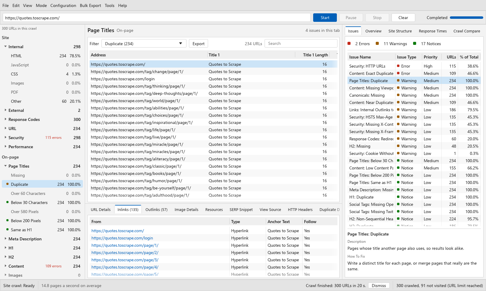
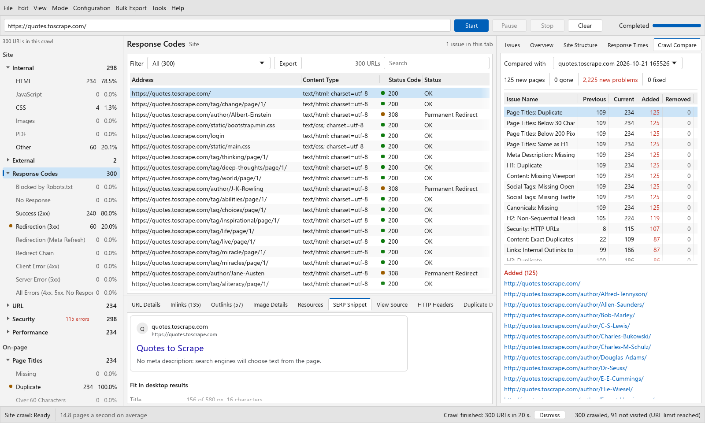

Site health
Find 4xx and 5xx responses, redirects, redirect chains, robots.txt blocks, canonical problems, and sitemap gaps.
- Response codes and redirects
- Indexability and directives
- Canonicals, hreflang, XML sitemaps
OPEN-SOURCE SEO SPIDER FOR WINDOWS
ShoutingMonkey is a free desktop SEO crawler built in Rust. Audit a site, trace each issue to the URLs that cause it, and export work your team can act on.
MIT licensed. No account. Native Windows application.

WHAT YOU CAN AUDIT
Start broad, then narrow down to the URLs and links behind a problem. ShoutingMonkey keeps the evidence close to the result.
Find 4xx and 5xx responses, redirects, redirect chains, robots.txt blocks, canonical problems, and sitemap gaps.
Audit titles, descriptions, headings, duplicate content, images, language, viewport tags, and structured data.
Inspect internal links, anchors, crawl depth, orphan URLs, link score, and the inlinks behind each URL.
Review HTTPS, mixed content, security headers, cookie flags, response times, and large HTML documents.
DESKTOP WORKFLOW
ShoutingMonkey is designed around the questions that follow a site crawl. What is broken? Which URLs are affected? Where did the link come from? What changed since the last run?

WHEN HTML IS NOT ENOUGH
For client-side pages, use the installed copy of Edge or Chrome to render the page before inspecting links and text. Keep the initial HTML crawl when it is all you need.
WHY SHOUTINGMONKEY
ShoutingMonkey focuses on the practical desktop workflow of crawling, auditing, investigating, comparing, and exporting. The app and CLI share the same Rust crawler, and the source is available on GitHub.
It is smaller in scope than established commercial suites. Choose it when you need a native Windows crawler with no URL cap built into the app and code you can inspect.
ShoutingMonkey is independent and is not affiliated with Screaming Frog. Screaming Frog and SEO Spider are trademarks of Screaming Frog Ltd.
COMMAND LINE AND CI
Run the crawler against a staging site, save a JSON report, and fail the command at a chosen issue severity.
shoutingmonkey-cli crawl https://staging.example.com ^
--report seo-issues.json --fail-on errorFREQUENTLY ASKED QUESTIONS
ShoutingMonkey is a free, open-source SEO spider for Windows. It crawls websites and audits technical SEO issues.
It is a free desktop crawler for core technical audit work. It is an independent project and is not affiliated with Screaming Frog.
Yes. Turn on rendering to use Microsoft Edge or Google Chrome installed on the computer.
Yes. The release includes shoutingmonkey-cli.exe for scripts and CI.
GET STARTED
Download the portable release or inspect the source code first.